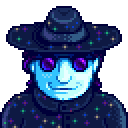

Señor Qi
| Señor Qi | |
 | |
| Información
| |
| Vive en | Desierto de Calico |
| Dirección | Casino |
| Matrimonio | No |
| Mejores regalos | n/d |
| “ | “Yo nací siendo un niño normal, pero pronto decidí que me iba a convertir en alguien extraordinario.” |
| — Señor Qi |
El Señor Qi es un misterioso desconocido, quien es encontrado por primera vez por el jugador(a) cuando pone una pila dentro de una caja de seguridad en el túnel. Él está relacionado con la caja vacía que se encuentra en la estación de tren.
Él opera el casino que está localizado detrás de la tienda de Sandy, en el Desierto de Calico. Para tener acceso al casino, el jugador(a) debe completar la secuencia de misiones "El misterioso Qi". Después de completar las misiones, el Matón se moverá a un lado para permitirte el acceso. El Señor Qi puede ser encontrado dentro del casino cuando esté abierto.
También és el propietario de la Habitación de nueces del Señor Qi.
Relaciones
El Señor Qi opera su casino detrás de la tienda de Sandy, en Oasis.
Los jugadores(as) no pueden regalar, ni aumentar los puntos de amistad con el Sr. Qi.
Evento/Misiones
| Nombre de la Misión | Prerrequisitos | Texto de la Misión | Resumen de la Misión | Dada por | Requisitos | Recompensas |
|---|---|---|---|---|---|---|
| El reto de Qi | Entra a la Caverna Calavera | Te han desafiado a llegar al piso 25 de la caverna calavera. Te han prometido una cuantiosa recompensa si lo consigues.
Tu amigo, Sr. Qi. |
Alcanza el piso 25 en la caverna calavera. Te han prometido una sustancial recompensa si lo logras. | Se activa cuando entras a la Caverna Calavera
Recibes una carta al día siguiente |
Alcanza el piso 25 en la caverna calavera. | |
| El misterioso Qi | Pon una Pila en una caja fuerte, adentro del túnel. |
En una caja fuerte secreta encuentras una nota con instrucciones peculiares. Está firmada por un tal «Sr. Qi». | Deja una concha arcoíris en el andén del tren. |
Indicado por un libro en la librería o investigando la caja. | ||
| El misterioso Qi | Deja una concha arcoíris en el andén del tren. |
Has encontrado otra nota escrita por el «Sr. Qi». La siguiente petición es aún más extraña. |
Coloca 10 remolachas en la nevera del alcalde Lewis. |
|||
| El misterioso Qi | Coloca 10 remolachas en la nevera del alcalde Lewis. |
Has encontrado otra nota extraña en la nevera del alcalde. Esta vez las instrucciones son aún más crípticas. | «Ofrece al dragón de las arenas su última comida». | Dirígete al desierto y encuentra los huesos del dragón, en la esquina superior izquierda. Pon una |
Una Tarjeta del club es tu recompensa. |
Agenda
El Sr. Qi no abandona el casino, excepto durante las escenas. Él puede ser encontrado ahí durante las horas de apertura del Oasis entre las 10:00 AM y 8:00 PM.
Él tampoco abandonara la Habitación de nueces del Señor Qi, que está disponible cuando el jugador consigua 100 nueces doradas.
Secreta
Después de leer la Nota secreta #10, el jugador encontrará al Sr. Qi en el nivel 100 de la Caverna Calavera. Se reproduce una escena en la que:
| Detalles |
|---|
| Sr. Qi felicitará al jugador por alcanzar el nivel 100, mientras solo haya usado 10 o menos Escaleras o dice que el jugador es "inteligente" pero no "honorable" por usar más de 10. En cualquier caso, otorgará al jugador la Leche de Serpiente de Iridio, que aumenta de forma permanente la Salud del jugador en 25 puntos. |

Si el jugador entra en la cumbre por metodo de bugs antes de la perfección este aparecerá y nos dirá que somos unos tramposos para después noquearnos.
Historial
- 1.3: Añadido encuentro en la Caverna Calavera. Retrato actualizado.
| Aldeanos | |
|---|---|
| Solteros | Alex • Elliott • Harvey • Sam • Sebastian • Shane |
| Solteras | Abigail • Emily • Haley • Leah • Maru • Penny |
| Ciudadanos | Caroline • Clint • Demetrius • Evelyn • George • Gil • Gunther • Gus • Jas • Jodi • Kent • Lewis • Linus • Marlon • Marnie • Morris • Pam • Pierre • Robin • Vincent • Willy |
| Otros | Abuelo • Birdie • Enano • Esbirro • Gobernador • Junimos • Krobus • Leo • Matón • Rasmodius • Sandy • Profesor Caracol • Señor Qi • Viejo marinero |